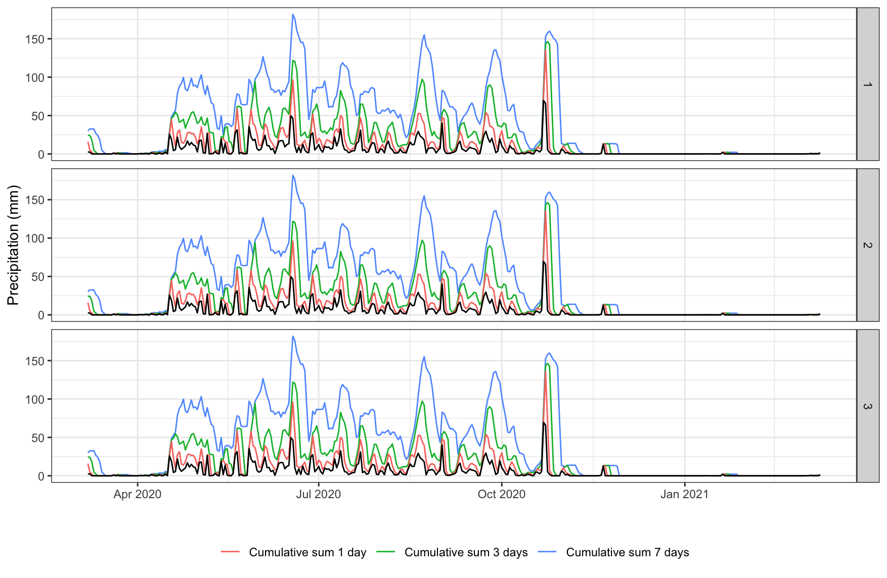
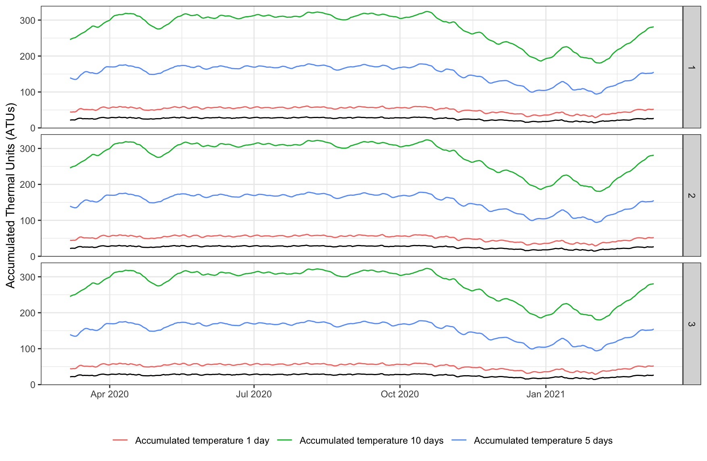
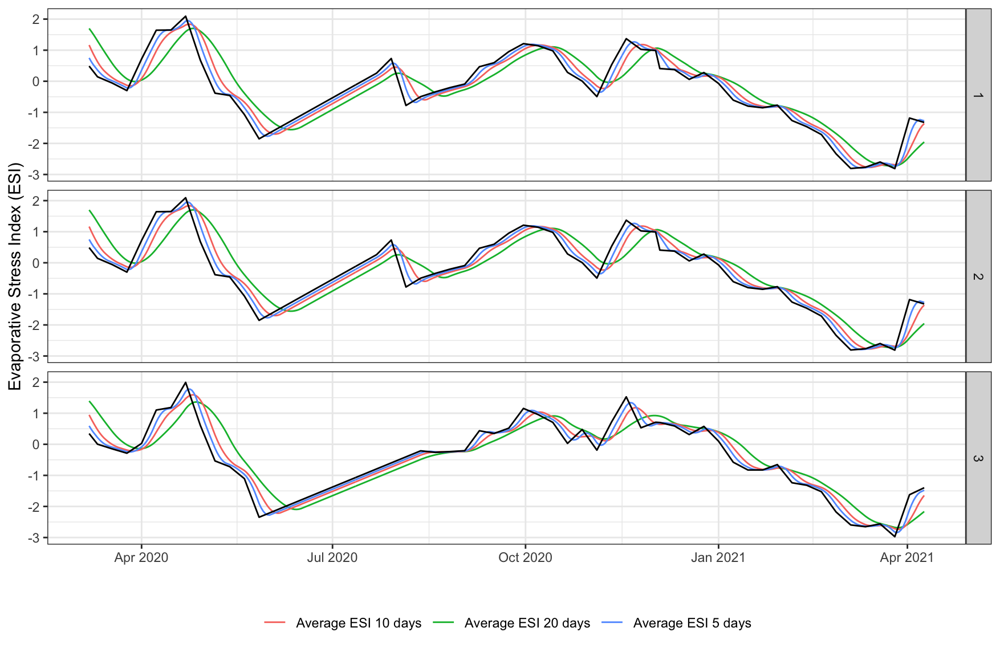
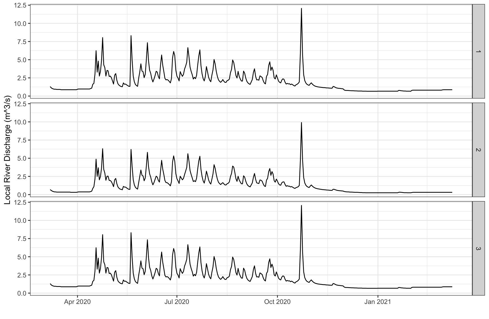

Getting climate data
get_climate_data.RmdThe amount of rainfall directly influences the volume of waste water available for environmental sampling depending on the time and location of a particular sample. The overall temperature of a site may also impact assays depending on the pathogen in question. The extent to which climatic factors act as confounders for environmental sampling efforts is still under exploration which is why we have included reproducible functions for retrieving climate data for sampling sites.
The provided wrapper functions access open-source data APIs and relate several climate variables to the locations and times of sample observations. These climate variables include:
- Cumulative sum of precipitation in millimeters (mm) for the previous X number of days
- Accumulated Thermal Units (ATUs) for the previous X number of days
- Evaporative Stress Index (ESI)
- Daily river discharge data from the nearest river (\(m^3/s\))
See below for an example of how to use the es package to
calculate these climatic variables for the locations and times of a set
of sampling observations.
Setup with environmental sampling observations
library(es)
library(ggplot2)
# Get data frame of simulated environmental sampling data
df <- es::template_es_data
head(df)
date location_id lat lon target_name ct_value
1 2020-03-07 1 23.8 90.37 target_0 NA
2 2020-03-07 1 23.8 90.37 target_0 NA
3 2020-03-07 1 23.8 90.37 target_0 NA
4 2020-03-07 1 23.8 90.37 target_0 29.95670
5 2020-03-07 1 23.8 90.37 target_1 31.60111
6 2020-03-07 1 23.8 90.37 target_1 32.20208Precipitation data
# Get precipitation data
precip <- es::get_precip_data(lon = df$lon,
lat = df$lat,
dates = df$date,
intervals = c(1,3,7))
head(precip)
id lat lon date precip_daily_sum precip_daily_sum_1 precip_daily_sum_3 precip_daily_sum_7
8 1 23.8 90.37 2020-03-07 2.6 15.8 24.4 30.2
9 1 23.8 90.37 2020-03-08 2.3 4.9 24.0 32.5
10 1 23.8 90.37 2020-03-09 0.0 2.3 18.1 32.5
11 1 23.8 90.37 2020-03-10 0.0 0.0 4.9 32.5
12 1 23.8 90.37 2020-03-11 0.0 0.0 2.3 26.7
13 1 23.8 90.37 2020-03-12 0.0 0.0 0.0 24.0
ggplot2::ggplot(precip, aes(x = date)) +
geom_line(aes(y = precip_daily_sum_7, col='Cumulative sum 7 days')) +
geom_line(aes(y = precip_daily_sum_3, col='Cumulative sum 3 days')) +
geom_line(aes(y = precip_daily_sum_1, col='Cumulative sum 1 day')) +
geom_line(aes(y = precip_daily_sum)) +
facet_grid(rows=vars(id)) +
labs(x="", y = "Precipitation (mm)") +
theme_bw() +
theme(legend.position = 'bottom',
legend.title = element_blank())
Temperature data
# Get temperature data
temp <- es::get_temp_data(lon = df$lon,
lat = df$lat,
dates = df$date,
intervals = c(1,5,10))
head(temp)
id lat lon date temp_daily_atu temp_daily_atu_1 temp_daily_atu_5 temp_daily_atu_10
11 1 23.8 90.37 2020-03-07 21.74167 44.39167 139.3792 245.8292
12 1 23.8 90.37 2020-03-08 22.37917 44.12083 137.4625 248.1125
13 1 23.8 90.37 2020-03-09 22.32917 44.70833 135.8833 249.9000
14 1 23.8 90.37 2020-03-10 22.08750 44.41667 134.8625 250.8208
15 1 23.8 90.37 2020-03-11 24.07917 46.16667 135.2667 253.2375
16 1 23.8 90.37 2020-03-12 26.17917 50.25833 138.7958 256.4333
ggplot2::ggplot(temp, aes(x = date)) +
geom_line(aes(y = temp_daily_atu_10, col='Accumulated temperature 10 days')) +
geom_line(aes(y = temp_daily_atu_5, col='Accumulated temperature 5 days')) +
geom_line(aes(y = temp_daily_atu_1, col='Accumulated temperature 1 day')) +
geom_line(aes(y = temp_daily_atu)) +
facet_grid(rows=vars(id)) +
labs(x="", y = "Accumulated Thermal Units (ATUs)") +
theme_bw() +
theme(legend.position = 'bottom',
legend.title = element_blank())
Evaporative Stress Index (ESI) data
# Evaporative Stress Index (ESI) data
esi <- es::get_esi_data(lon = df$lon,
lat = df$lat,
dates = df$date,
intervals = c(5,10,20))
head(esi)
id date lon lat esi_daily_avg observed esi_daily_avg_5 esi_daily_avg_10 esi_daily_avg_20
1 1 2020-03-07 90.37 23.8 0.4875092 0 0.7513141 1.1653987 1.699109
2 1 2020-03-08 90.37 23.8 0.4014352 0 0.6328268 1.0174448 1.607651
3 1 2020-03-09 90.37 23.8 0.3153611 0 0.5305462 0.8783309 1.510441
4 1 2020-03-10 90.37 23.8 0.2292871 0 0.4444722 0.7480570 1.407479
5 1 2020-03-11 90.37 23.8 0.1432131 1 0.3583981 0.6266231 1.298765
6 1 2020-03-12 90.37 23.8 0.1144625 0 0.2818780 0.5192403 1.191385
ggplot2::ggplot(esi, aes(x = date)) +
geom_line(aes(y = esi_daily_avg_20, col='Average ESI 20 days')) +
geom_line(aes(y = esi_daily_avg_10, col='Average ESI 10 days')) +
geom_line(aes(y = esi_daily_avg_5, col='Average ESI 5 days')) +
geom_line(aes(y = esi_daily_avg)) +
facet_grid(rows=vars(id)) +
labs(x="", y = "Evaporative Stress Index (ESI)") +
theme_bw() +
theme(legend.position = 'bottom',
legend.title = element_blank())
Daily discharge data from nearest river
# Get daily discharge data from nearest river
river <- es::get_river_discharge_data(lon = df$lon,
lat = df$lat,
dates = df$date)
head(river)
id lat lon date daily_river_discharge
1 1 23.8 90.37 2020-03-07 1.31
2 1 23.8 90.37 2020-03-08 1.12
3 1 23.8 90.37 2020-03-09 1.03
4 1 23.8 90.37 2020-03-10 0.97
5 1 23.8 90.37 2020-03-11 0.94
6 1 23.8 90.37 2020-03-12 0.94
ggplot2::ggplot(river, aes(x = date)) +
geom_line(aes(y = daily_river_discharge)) +
facet_grid(rows=vars(id)) +
labs(x="", y = "Local River Discharge (m^3/s)") +
theme_bw() +
theme(legend.position = 'bottom',
legend.title = element_blank())
Merge climate data with environmental sampling observations
# Merge climate data with environmental sampling observations
climate_data <- c('precip', 'temp', 'esi', 'river')
for (i in 0:length(climate_data)) {
if (i == 0) {
result <- df
} else {
result <- merge(result,
subset(get(climate_data[i]), select=-c(id)),
by=c('lon', 'lat', 'date'),
all.x=TRUE)
}
}
head(result)
lon lat date location_id target_name ct_value precip_daily_sum precip_daily_sum_1 precip_daily_sum_3 precip_daily_sum_7 temp_daily_atu
1 90.37 23.8 2020-03-07 1 target_2 33.42286 2.6 15.8 24.4 30.2 21.74167
2 90.37 23.8 2020-03-07 1 target_2 33.42286 2.6 15.8 24.4 30.2 21.74167
3 90.37 23.8 2020-03-07 1 target_2 33.42286 2.6 15.8 24.4 30.2 21.74167
4 90.37 23.8 2020-03-07 1 target_3 32.88970 2.6 15.8 24.4 30.2 21.69167
5 90.37 23.8 2020-03-07 1 target_3 32.88970 2.6 15.8 24.4 30.2 21.69167
6 90.37 23.8 2020-03-07 1 target_3 32.88970 2.6 15.8 24.4 30.2 21.69167
temp_daily_atu_1 temp_daily_atu_5 temp_daily_atu_10 esi_daily_avg observed esi_daily_avg_5 esi_daily_avg_10 esi_daily_avg_20 daily_river_discharge
1 44.39167 139.3792 245.8292 0.4875092 0 0.7513141 1.165399 1.699109 1.31
2 44.39167 139.3792 245.8292 0.4875092 0 0.7513141 1.165399 1.699109 1.31
3 44.39167 139.3792 245.8292 0.4875092 0 0.7513141 1.165399 1.699109 0.69
4 44.28333 139.0708 245.2917 0.4875092 0 0.7513141 1.165399 1.699109 1.31
5 44.28333 139.0708 245.2917 0.4875092 0 0.7513141 1.165399 1.699109 1.31
6 44.28333 139.0708 245.2917 0.4875092 0 0.7513141 1.165399 1.699109 0.69